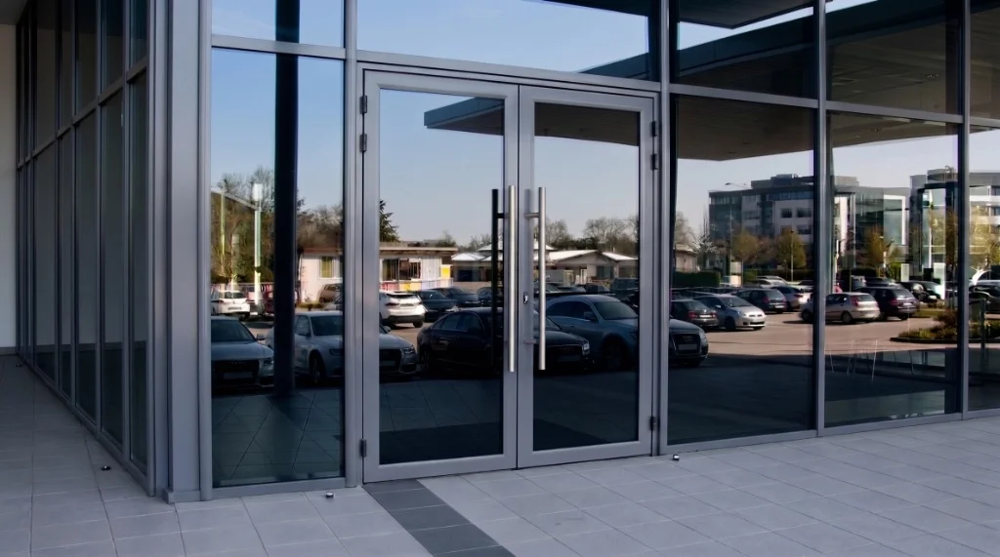
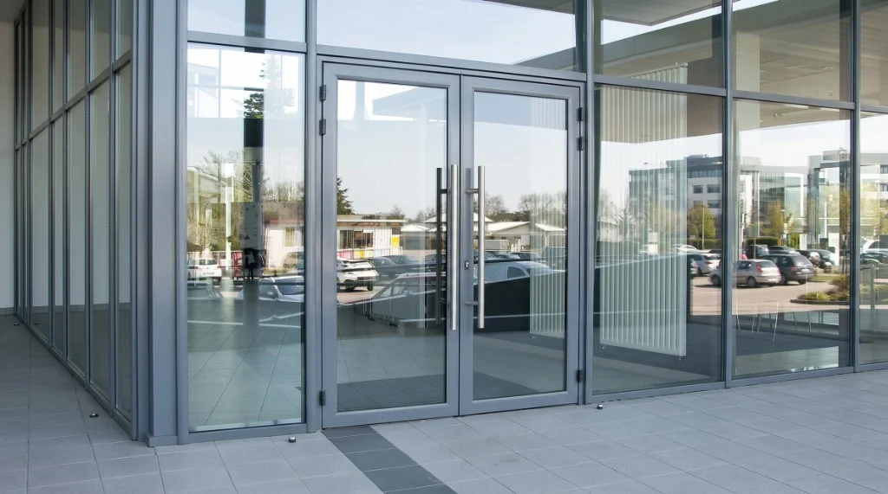
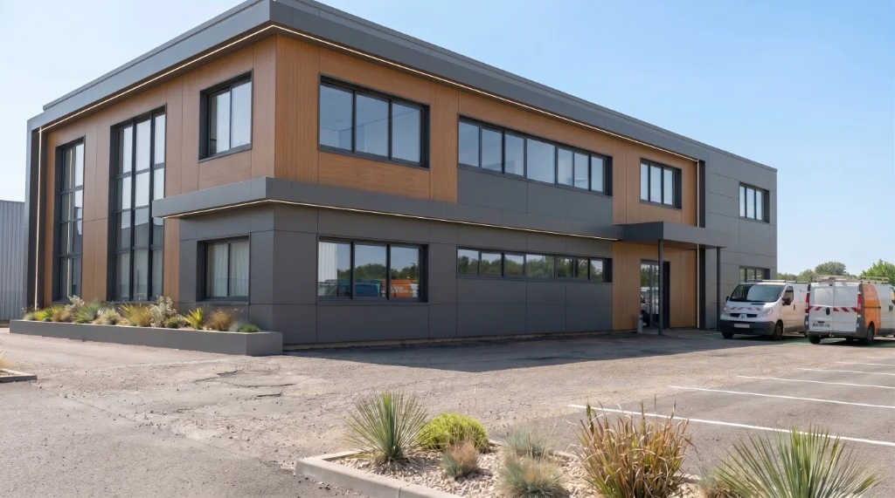

AvantAprèsLe hall, en toute discrétion.
Bureaux · Film miroir
Votre installateur · Conseil, fourniture & pose
Pose de films solaires, anti-éclats et de protection.Votre maison chauffe ? Votre vitrine mérite d’être mieux protégée ? Nous étudions votre besoin, fournissons le film adapté et réalisons la pose à Valence, Lyon et en Rhône-Alpes.

Un film discret.
Une différence au quotidien.
Commencez par ce qui compte pour vous
Vous n’avez pas besoin de connaître une référence de film. Dites-nous ce qui vous gêne : nous nous occupons du choix technique et de la pose.
Réduire les apports solaires et l’éblouissement, avec un rendu adapté à votre besoin de lumière.
Un film transparent pour aider à maintenir les fragments et renforcer la sécurité des personnes.
Une protection renforcée à étudier selon les chocs redoutés, le vitrage et sa fixation.
Limiter l’exposition aux UV et ralentir une des causes de décoloration, sans masquer votre espace.
Dépolis, effets miroir ou décors pour doser les regards et préserver la lumière.
Une protection transparente que l’on entretient ou remplace selon la dégradation.
6 points de départ. Un seul interlocuteur pour étudier et poser votre solution.
Votre lieu, vos priorités, vos contraintes.
Un film sélectionné pour votre vitrage.
Préparation, application et finitions.
Des solutions qui s’adaptent à votre quotidien
Le soleil, les regards, les petits accidents du quotidien : un film technique transforme votre vitrage existant, selon ce qui compte pour vous.
01 / CONFORTRéduire les apports de chaleur et l’éblouissement. Filtrer les UV, en choisissant la lumière que vous laissez entrer.
Maintenir les fragments en cas de bris et adapter la résistance au risque. Une préconisation et une pose adaptées au niveau de protection recherché.
 03 / LIBERTÉ
03 / LIBERTÉTransparent, neutre, miroir, dépoli ou coloré. Habiller les espaces et doser les regards avec le bon rendu.

Être visible depuis la rue.
Protéger ce qui compte à l’intérieur.
Vous possédez une boutique ?
Vous cherchez une protection anti-éclats ou renforcée contre la casse ? Nous distinguons ces objectifs, étudions votre vitrine et vous proposons une solution fournie et posée, adaptée à votre commerce.
Projetez-vous, nous nous chargeons de la technique
Clair, neutre ou miroir : explorez les ambiances. Le rendu vous plaît ? Nous vérifions ensuite le film adapté à votre vitrage et à votre exposition.
 Sans filmAvec film · Clair
Glissez pour comparer · Aperçu de teinte indicatif
Sans filmAvec film · Clair
Glissez pour comparer · Aperçu de teinte indicatif
Sélectionnez votre ambiance
Un exemple d’ambiance presque invisible
Vous voulez garder une pièce lumineuse et l’aspect de vos vitres ? Des films solaires très clairs permettent de travailler le confort sans choisir un effet miroir marqué.
Exemple : CLARITY 333 XC, pose extérieure. Sur le même simple vitrage clair 3 mm sans film : 91 % de lumière transmise, 12 % d’énergie solaire rejetée, 25 % d’UV rejetés.
Source de ces valeurs : Solar Screen (nouvel onglet)Données Solar Screen sur simple vitrage clair de 3 mm. Le rendu à l’écran est illustratif. Les performances et la compatibilité dépendent du vitrage et de la configuration ; ces pourcentages ne sont pas une baisse de température intérieure.
Et pour mon vitrage ? ↗À la maison, en boutique ou dans vos locaux
Votre intérieur, votre façon de vivre.Maisons · Appartements · Vérandas
Une véranda trop chaude, un salon ébloui, un vis-à-vis gênant ? Nous partons de votre quotidien pour trouver le bon équilibre entre confort, lumière et intimité.
Mon accompagnement pour la maisonBureaux · Commerces · Établissements
Façades exposées, vitrines, cloisons ou surfaces sollicitées : solaire, sécurité, anti-graffiti et films spécifiques se choisissent en fonction de vos usages et de vos contraintes.
Découvrir les solutions pro05 / Voir plus loin que le solaire
Un film de sécurité aide à retenir les fragments de verre en cas de bris. De la prévention des accidents aux besoins de protection renforcée, nous étudions l’ensemble vitrage, film et fixation.
Un film ne rend pas le verre incassable. La norme EN 12600 porte sur l’impact de type corps humain ; la résistance à l’attaque relève notamment de l’EN 356, selon le système testé.
Schéma de principe · ne représente pas un essai

Le sur-mesure commence sur le terrain.Vitrage · Exposition · Climat · Usages
Notre métier : adapter la solution, puis la poser
Nous utilisons des outils professionnels pour étudier vos conditions réelles. Votre besoin de lumière, l’exposition, le climat et la composition du vitrage orientent notre recommandation.
Chaleur, éblouissement, intimité ou sécurité : nous identifions vos priorités, vos usages et les contraintes du lieu.
Composition, orientation, ombrages, état du support et pose intérieure ou extérieure : nous vérifions la compatibilité et les risques thermiques avant de sélectionner le film.
Nous vous expliquons le compromis entre rendu, transmission lumineuse et protection, avec les données du fabricant pour la référence retenue. Une estimation énergétique dépend des hypothèses propres au bâtiment.
Préparation du support, découpe, application et finitions : une pose soignée selon les préconisations du fabricant, puis des conseils d’entretien adaptés.
Le résultat, en vrai


AvantAprèsBureaux · Film miroir

 AvantAprès
AvantAprèsParticulier · Baie vitrée

AvantAprèsProfessionnel · Contrôle solaire
Nos photos de chantier. Déplacez les curseurs pour explorer l’avant et l’après.
Exigeants sur la pose.Aussi sur la qualité de nos films.
Le choix des films, derrière notre accompagnement
Nous fournissons et posons des films Solar Screen. La gamme nous permet d’adapter votre solution ; notre rôle est de traduire vos besoins en une préconisation claire et de la mettre en œuvre.
SOLAR SCREEN®Notre fournisseurNous vous expliquons les bénéfices, le rendu, les limites et les conditions de pose de la solution retenue.
Des vidéos pour comprendre les usages du solaire, de la sécurité et des films spécifiques.
Des repères pour distinguer les performances du film et le résultat dans votre bâtiment. Avec un exemple de recherche publié.
Votre installateur en Auvergne-Rhône-Alpes
Opalis Solaire accompagne les particuliers, commerçants et professionnels pour la pose de films solaires, anti-UV, anti-éclats, de sécurité et d’intimité. Nous intervenons notamment à Valence, Lyon, Grenoble et Saint-Étienne, ainsi que dans les secteurs voisins, selon votre projet.
Une baie vitrée, une vitrine en rez-de-chaussée ou une façade de bureaux : l’exposition, le vitrage et le résultat recherché guident notre étude. Contactez-nous pour vérifier les possibilités et organiser une intervention adaptée à votre lieu.
Les questions que vous nous posez
Chaque vitrage mérite une réponse précise. Nous sommes là pour vous guider.
Poser ma questionIl existe des films presque invisibles, des neutres et des miroirs plus teintés. Tous modifient la transmission lumineuse à un degré différent. Nous choisissons avec vous l’équilibre adapté entre lumière, éblouissement et protection solaire. Le comparateur présente quatre références et leurs valeurs fabricant.
La compatibilité se vérifie avant la pose : simple ou double vitrage, traitement existant, verre feuilleté, orientation et ombrages influencent le choix. Selon la référence et le support, la pose est intérieure ou extérieure. Il n’existe pas de film universel adapté à tous les cas.
Le film solaire agit sur les apports solaires, les UV et l’éblouissement. Le film de sécurité vise notamment à maintenir les fragments de verre en cas de bris. Certaines références combinent plusieurs fonctions. Les classements dépendent du système testé. Trouver la protection adaptée à mon vitrage.
L’effet miroir dépend de la différence de lumière entre les deux côtés du vitrage. Si l’intérieur est éclairé et l’extérieur sombre, l’intimité peut s’inverser. Pour une confidentialité permanente, nous étudions notamment un film dépoli ou une solution adaptée à l’usage.
Le résultat dépend du climat, de l’exposition, des surfaces vitrées, du vitrage, des ombrages et des équipements. Nous ne promettons pas un nombre de degrés ou une économie universelle. Une étude avec des hypothèses explicites permet d’évaluer l’intérêt de la solution pour votre bâtiment.
Nous intervenons pour les particuliers et les professionnels en Auvergne-Rhône-Alpes, notamment à Valence, Lyon, Grenoble et Saint-Étienne. Appelez le 07 82 85 20 08 ou décrivez votre projet dans le formulaire. Le devis est gratuit et sans engagement.
Tout commence par un échange
Quelques informations sur votre projet, et nous revenons vers vous pour étudier la solution qui vous correspond. Devis gratuit, sans engagement.
07 82 85 20 08